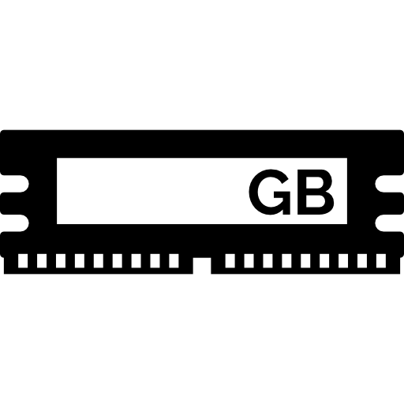

Charles Babbage propuso un nuevo dispositivo mecanico llamado "La Maquina Diferencial", una máquina más compleja que podia aproximar polinomios, comenzo la construcción en 1823 y durante las siguientes dos décadas intento fabricar y ensamblar los 25.000 componentes que de manera colectivan pesaban alrededor de 15 toneladas y el proyecto fue abandonado, pero en 1991 los historiadores lo terminaron de construir basandose en los dibujos y escritos de Babbage y funcionó. Lo más importante es que Babbage durante la construcción de esta máquina se imagino una mas compleja llamada "La Máquina Analítica", la cual a diferencia de las demás era una "computadora de propósitos generales", ya que se le podia dar datos y ejecutaba operaciones en secuencia, tenía memoria e incluso una impresora primitiva, estaba adelantada a su tiempo y tampoco fue construida totalmente. Sin embargo la idea de una computadora automática, una que pudiera guiarse a través de una serie de operaciones automáticamente, era algo enorme, y presagiaría los programas de computadora. La matemática inglesa Ada Lovelace escribió programas hipotéticos para la máquina analítica, diciendo: "Un nuevo vasto y potente lenguaje se desarrolla para el futuro uso del análisis". Por su trabajo Ada a menudo es considerada como la primera programadora del mundo.
En 1890 Estados Unidos presento problemas con su censo que exigía la clase de eficiencia que las computadoras podían proveer, la Constitución de Estados Unidos requiere que sea llevado a cabo un censo cada 10 años, con el propósito de la distribución de fondos federales, la representación en el Congreso y cosas por el estilo y en 1880 la población de Estados Unidos estaba en auge sobre todo debido a la inmigración, tomo 7 años compilar manualmente esta información y para el tiempo que termino ya estaba fuera de fecha y se predijo que el cálculo del censo de 1890 tomaria 13 años.
La oficina del Censo consulto a Herman Hollerith quien había construido una máquina de tabulación, utilizaba tarjetas perforadas, que eran tarjetas de papel con rejilla de ubicaciones que se podían perforar para representar datos. Esta máquina permitio realizar el censo en sólo dos años y medio, ahorrando asi millones de dolares a la oficina del censo.
Asi las compañias comenzaron a reconocer el valor de la computación y vieron su potencial para mejorar tareas intensivas de mano de obra e información, Hollerith fundó La Compañia de Máquinas de Tabulación que posteriormente se fusionó con otros fabricantes de máquinas en 1924 para convertirse en la Corporación Internacional de Máquinas Comerciales o IBM, estas máquinas electro-mecánicas fueron un gran exito transformando el comercio y el gobierno, para mediado de la decada de 1900, la explosión de la población mundial y el aumento del comercio globalizado exigieron herramientas aún más rápidas y flexibles para el procesamiento de datos.font>
Una de las mas grandes computadoras electro-mecánicas construidas fue la Harvard Mark I, finalizada en 1944 por IBM para los aliados de la II Guerra Mundial contenia 765.000 componentes, tres millones de conexiones y 500 millas de cable, podia realizar 3 sumas o restas por segundo, las multiplicaciones tomaban 6 segundos y las divisiones 15 segundos, y operaciones más complejas como las trigonométricas podian tardar mas de 1 minuto, por ser una máquina inmensa, oscura y caliente atraían insectos, en septiembre de 1947 la Harvard Mark II, extrajeron una polilla muerta, Grace Hopper dijo ""Desde entonces cuando algo salia mal en una computadora deciamos que tenia bichos(bugs) en ella", alli nació el término de "Bug de computadora" En 1957 se lanzo la primer computadora comercial la IBM 608 contenia 3000 transistores y podia realizar 4500 sumas o aproxidamente 80 multiplicaciones o divisiones por segundo.
Un binario puede usarse para representar un número en lugar de verdadero y falso como los valores booleanos podemos llamar esto como estados 0 y 1 y para representar cosas más grandes solo se agregan mas dígitos binarios, funcionan igual que los números decimales, los decimales tienen 10 valores posibles del 0 a 9, y para números más grandes se agregan al frente más dígitos, Por ejemplo el número 263 representa 2 cienes, 6 dieces y 3 unos, y si sumamos el resultado es 263 lo que se llama notación en base 10, el binario funciona igual solo que en base 2, porque solo es posible el 0 y el 1, ejemplo el numero binario 101 esto significa que tenemos 1 "cuatro", 0 "dos". 1 "uno" si sumamos el resultado es 5.
Cada uno de los dígitos se llama bit, donde su valor más bajo es cero y su valor mas alto es 255, que requiere que todos los bits sean 1, estos 256 valores diferentes o 2 8, las computadoras, gráficos o audios de 8 bits, son la mayoria de computadoras que hicieron su tracto de 8 bits y estaban limitados a 256 colores diferentes, y los 8 bits son tan comunes en la computación que tienen el nombre de byte, En 10 bytes hay 80 bits. Kilobytes, megabytes, gigabytes, etc, estos prefijos denotan la escala de datos, en binario un kilobyte son 2 10 bytes es decir 1024 bytes. Si hablamos de computadoras de 32 bits o 64 bits operan en tractos de 32 o 64 bits, el número más grande a representar con 32 bits es apenas 4.3 billones, que serian 31 "unos" en binario, nuestras fotos en instagram se ven lindas porque están compuestas por millones de colores, porque las computadoras de hoy en dia procesan colores con gráficas de 32 bits. Para representar números positivos y negativos, las computadoras utilizan el primer bit como signo: 1 negativo y 0 positivo, y los 31 bits restantes para representar el número, eso nos da un rango de aproximadamente +/- 2 billones el cual no es suficiente para muchas tareas, por eso los números de 64 bits son útiles el valor más alto que pueden representar es alrededor de 9.2 quintillónes. fue necesario crear memorias de 64 bits porque las computadoras requieren de más memoria para almacenar información la cual ha avanzado hasta gigabytes y terabytes, eso son trillones de bytes.
Además de positivos y negativos las memorias deben lidiar con números que no son completos como 12.7 ó 43989.1, los llamados Punto Flotante porque el punto puede flotar del medio del número, varios métodos se crearon para representarlo pero el más común es el estándar IEE 754, el cual guarda los valores en una especia de notación científica. Ejemplo 625.9 puede ser escrito como 0.6259 * 10 a la 3, donde .6259 se llama base y el 3 exponente, en un número de punto flotante de 32 bits,el primer bit se utiliza para el signo, los siguientes 8 bits para el exponente, y los siguientes 23 bits restantes para guardar la base. Las computadoras utilizan números para representar letras, la más sencilla es numerar las letras del alfabeto: A es 1, B es 2 y asi sucesivamente; El famoso Francis Bacon escritor inglés usaba secuencias de 5 bits para codificar las 26 letras del alfabeto, y enviar mensajes secretos en los años 1600, esto es suficiente para 26 letras porque 6 bits pueden almacenar 32 valores posibles, pero no suficiente para los signos de puntuación, digitos, letras mayúsculas entre otros, aqui es donde entra al juego el ASCII el Código Americano Estandar para el Intercambio de Información, inventado en 1963 era un código de 7 bits capaz de almacenar 128 valores diferentes, Ejemplo la letra a minúscula es representada por el número 97, mientras que la A mayúscula por el número 65, esto permitió que diferentes computadoras pudieran compartir información conocido como "Interoperabilidad" y su limitación fue diseñada solo para el inglés, del 128 al 255 previamente vacios para caracteres "nacionales" en EEUU esos números extras servían básicamenta para codificar simbolos adicionales, como la notación matemática, elementos gráficos y acentos, por otro lado mientras los caracteres latinos usados las computadoras rusas, usaban los caracteres vacios para representar los caracteres cirílicos, y las griegas para los caracteres griegos, etc. El problema fue que al abrir un correo electrónico en letón en una computadora turca el resultado era completamente incomprensible, asi fue como cada pais inventó un código el cual era mutuamente incompatible, y asi nació Unicode un formato para dominarlos a todos, concebido en 1992 los reemplazo con un sistema de código universal, la versión más común de Unicode utiliza 16 bits, con un espacio para un poco más de de un millón de códigos, suficiente para cada idioma. Los mensajes de texto, los videos de Youtube, las páginas web en internet e inclusive el sistema operativo de la computadora, no son más que largas secuencias de unos y ceros.
Los procesadores modernos tienen circuitos especiales maneja cosas como procesamientos gráficos, restauración de video comprimido, encriptación de archivos,todas estas operaciones requieren enormes ciclos de reloj para realizar operaciones estándar. La primera CPU integrada verdadera la Intel 4004 tenía 46 instrucciones suficiente para ser una computadora funcional, pero los procesadores modernos tienen miles de instrucciones.  La RAM es un módulo de memoria fuera de la CPU, es decir los datos deben transferirse hacia la RAM a través de lineas de datos llamadas buses, estas señales eléctricas se mueven a la velocidad de la luz, dado que la CPU funciona a velocidades de gigahercios (miles de millones por segundo). Debido a que esta transferencia requiere tiempo para la RAM y el CPU se queda esperando, se implanto en el CPU La Memoria Cache las cuales varian de tamaño desde kilobyte a megabyte, cuando la CPU accede a una ubicación en la memoria, la RAM puede pasar todo el bloque de datos, y se almacena el bloque en la memoria caché, esto es muy útil, la razón es que los datos de la computadora a menudo estan bien organizados y procesados secuencialmente, como el cache esta conectado al procesador puede enviar datos en un ciclo de reloj, no tiene que esperar, si los datos a solicitar en la RAM ya estan en la caché esto se llama un Acierto de Caché y si por lo contrario no están se llama una Falta de caché , esta memoria caché se puede usar como un almacen temporal para cÁlculos largos y complejos. Los datos de la caché y la memoria RAM no están desactualizados debido al Dirty bit , esto es cuando la caché esta llena , y el procesador solicita un nuevo bloque de memoria la sincronización ocurre con mayor frecuencia, verifique los bits sucios antes que el caché libere los bloques viejos limpiando los bloques viejos, cuando estan sucios, los bloques viejos se escriben primero en la RAM, antes que se muevan los nuevos. Otro truco que puede aumentar el rendimiento del CPU se llama Canalización de instrucciones, decodifica el siguiente comando mientras se ejecuta un comando, en este tipo de canalización, las instrucciones se ejecutan en cada ciclo del reloj, duplicando la velocidad de procesamiento, existen peligros como la dependencia entre instrucciones puede buscar algo que acaba de ser modificado por el comando que se esta ejecutando actualmente, para compensar este problema, los procesadores canalizados deben mirar hacia adelante en las dependencias de datos, si es necesario poder retrasar la tuberia para evitar problemas. Las computadoras y celulares de alta gama, pueden cambiar el orden de los comandos correlacionados dinámicamente esto se llama Ejecución fuera de orden . Hoy en dia casi todos los procesadores se implementan en una tuberia, otro gran riesgo es la instrucción de salto condicional, Jump Negative está instrucción puede cambiar el flujo de ejecución de un programa en función de su estado, un procesador de canalización simple puede demorar si encuentra una instrucción de salto,porque tenemos que esperar la determinación del valor de estado, conociendo el resultado del salto, el procesador comenzará a repoblar la tuberia, esto produce retrasos, por esto los procesadores de gama alta, tiene trucos para resolver estos problemas, utilizan una técnica llamada Ejecución Especulativa, para adivinar que camino tomar, en base a esta suposición comienza a llenar la tuberia con instrucciones, cuando la instrucción de salto completa la ejecución, si la CPU adivino correctamente puede continuar sin demora, las intrucciones correctas ya estan en la tuberia, por el contrario si la CPU adivina mal descarte todos los resultados esperados, el Lavado de tuberias es lo que lava la tubería, para minimizar el efecto de tales descargas, los fabricantes de CPU, desarrollaron una forma de hacer conjeturas, elaboradas sobre donde ir para la Predicción de ramas, los procesadores de hoy en dia pueden predecir con más del 90 % de precisión, en un caso ideal la tubería podria completar la ejecución de una instrucción en cada ciclo del reloj, también han surgido los procesadores Superescalares que pueden ejecutar más de una instrucción en cada ciclo del reloj, incluso en el diseño de la tubería, todo el procesador no puede hacer nada durante la fase de ejecución. Otra forma de aumetar el rendimiento es un Procesador de Múltiples Núcleos , que procesan múltiples flujos de instrucciones simultáneamente, residen múltiples unidades de procesamiento independientes en un solo chip de CPU, pueden compartir recursos como el caché, también es posible que los núcleos manejen cálculos comunes juntos, si esto no es suficiente se puede ensamblar la computadora con múltiples CPU independientes, como son Los Servidores .
Siguiente Anterior